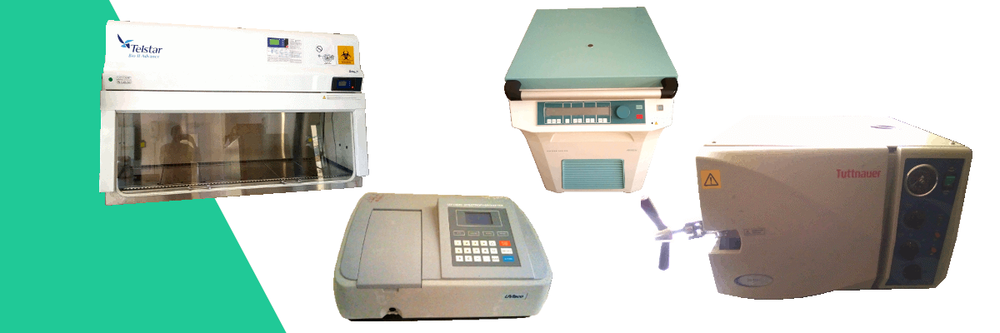
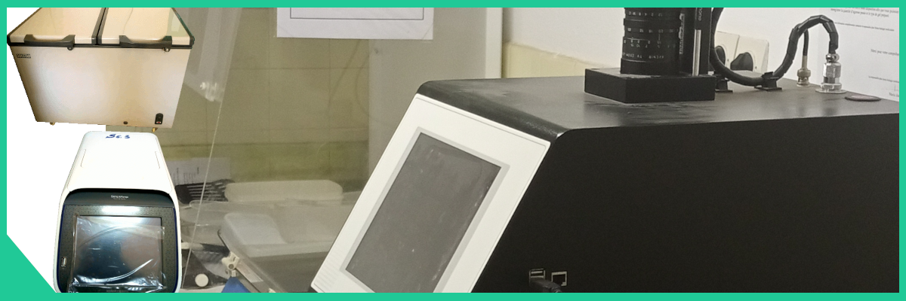
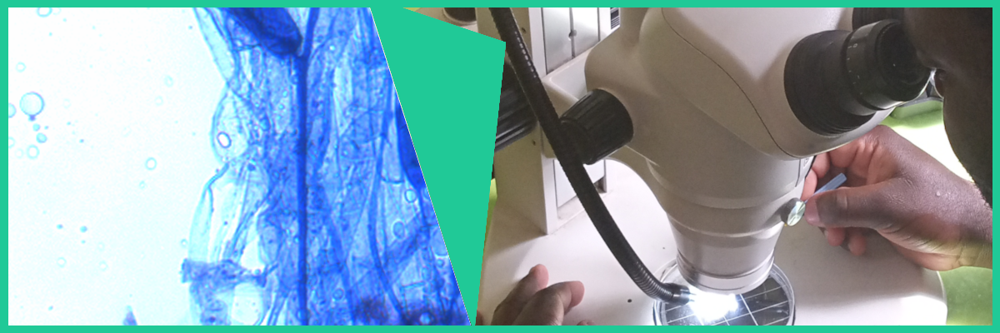
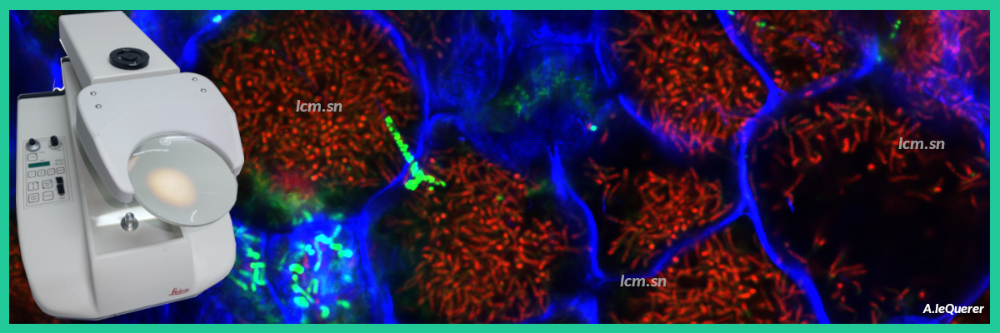

An ISO9001 certificate and modern equipment
The International Joint Laboratory Adaptation of Plants and Associated Microorganisms to Environmental Stresses (LAPSE) brings together researchers and teacher-researchers from the Research Institute for Development (IRD) and many other partners (Senegalese Institute of Agricultural Research (ISRA), Cheikh Anta Diop University (UCAD, Dakar), AfricaRice, University of Thiès....)
LAPSE has set up technological platforms to provide the community with high-performance tools to carry out its research and training activities. The objective is to pool the resources of the different partners to have modern equipment, ensure their maintenance and have technical staff to maintain them, operate them and train users. These platforms are open to the different teams of the IJL but also to researchers from West Africa wishing to benefit from these tools.
The LCM shares with the IJL a certain number of platforms:



